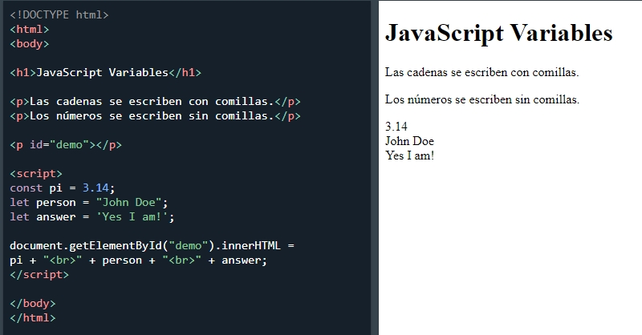
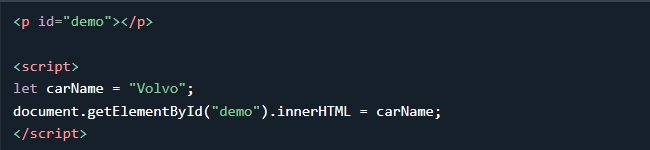
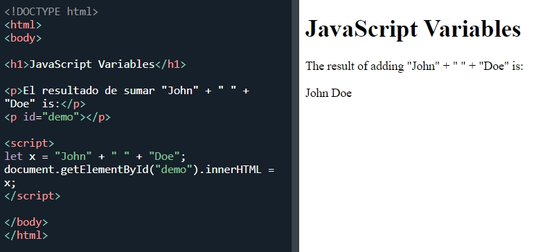

Las variables son contenedores para almacenar datos (almacenar valores de datos).
Existen 4 formas de declarar una variable de JavaScript:
Declare siempre las variables de JavaScript con var, let o const.
La palabra clave var se usa en todo el código JavaScript desde 1995 hasta 2015.
Las palabras clave let y const se agregaron a JavaScript en 2015.
Si desea que su código se ejecute en un navegador anterior, debe usar var.
Si quieres una regla general: declara siempre las variables con const.
Si cree que el valor de la variable puede cambiar, use let.
En este ejemplo, price1, price2 y total, son variables:
Las dos variables price1 y price2 se declaran con la palabra clave const.
Estos son valores constantes y no se pueden cambiar.
La variable total se declara con la palabra clave let, y es un valor que se puede cambiar.
Todas las variables de JavaScript deben identificarse con nombres únicos .
Estos nombres únicos se denominan identificadores .
Los identificadores pueden ser nombres cortos
(como x e y) o nombres más descriptivos (edad, suma, volumen total).
Las reglas generales para construir nombres para variables (identificadores únicos) son:
En JavaScript, el signo igual ( =) es un operador de "asignación", no un operador "igual a".
El operador "igual a" se escribe como == en JavaScript.
Las variables de JavaScript pueden contener números como 7 y valores de texto como "John Doe".
En programación, los valores de texto se denominan cadenas de texto.
JavaScript puede manejar muchos tipos de datos, pero por ahora, solo piense en números y cadenas.
Las cadenas se escriben entre comillas simples o dobles. Los números se escriben sin comillas.
Si pone un número entre comillas, se tratará como una cadena de texto.
Crear una variable en JavaScript se llama "declarar" una variable.
Declaras una variable de JavaScript con var o la palabra clave let:
Después de la declaración, la variable no tiene valor (técnicamente lo es undefined ).
Para asignar un valor a la variable, utilice el signo igual:

También puede asignar un valor a la variable cuando la declara:
En el siguiente ejemplo, creamos una variable llamada carName y le asignamos el valor "Volvo". Luego, "damos salida" al valor dentro de un párrafo HTML con id="demo":
Nota: Es una buena práctica de programación declarar todas las variables al comienzo de un script.

Una declaración puede abarcar varias líneas:

Puede declarar muchas variables en una declaración.
Comience la declaración con let y separe las variables con comas :
Una declaración puede abarcar varias líneas:
En los programas de computadora, las variables a menudo se declaran sin valor. El valor puede ser algo que debe calcularse o algo que se proporcionará más adelante, como una entrada del usuario.
Si vuelve a declarar una variable de JavaScript declarada con var, no perderá su valor.
Al igual que con el álgebra, puedes hacer operaciones aritméticas con variables de JavaScript, usando operadores como =y +:
También puede agregar cadenas, pero las cadenas se concatenarán:
Prueba también esto:
Nota: Si pone un número entre comillas, el resto de los números se tratarán como cadenas y se concatenarán.
Dado que JavaScript trata un signo de dólar como una letra, los identificadores que contienen $ son nombres de variables válidos:
Usar el signo de dólar no es muy común en JavaScript, pero los programadores profesionales a menudo lo usan como un alias para la función principal en una biblioteca de JavaScript.
En la biblioteca JavaScript jQuery, por ejemplo, la función principal $ se usa para seleccionar elementos HTML. En jQuery $("p"); significa: "seleccionar todos los elementos p".
Dado que JavaScript trata el guión bajo como una letra, los identificadores que contienen _ son nombres de variables válidos:
Usar el guión bajo no es muy común en JavaScript, pero una convención entre los programadores profesionales es usarlo como un alias para las variables "privadas (ocultas)".